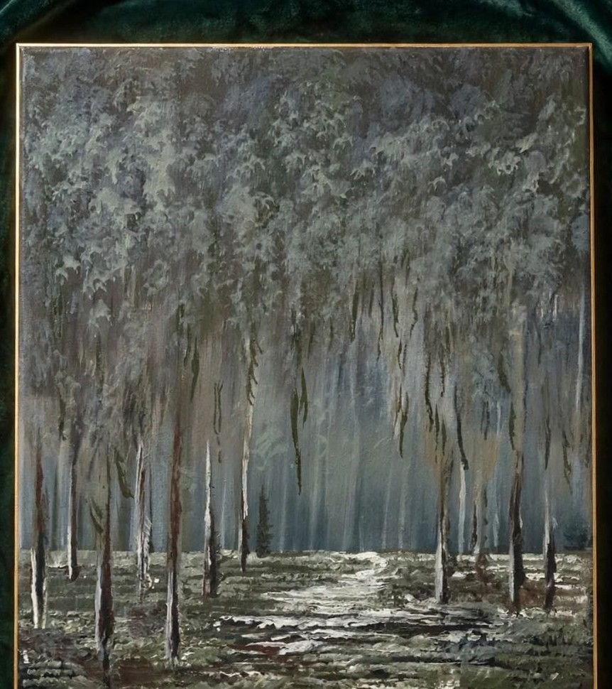
Šapat Magle
Akril · detalji uskoro
Dalj · Hrvatska
Originalni radovi nastali iz tišine, prirode, teksture i osobnog doživljaja svijeta.
Odabrani radovi
Ovo je prvi radni izbor. Nazivi, tehnike, dimenzije, dostupnost i cijene dopunit će se u sljedećoj verziji.

Akril · detalji uskoro
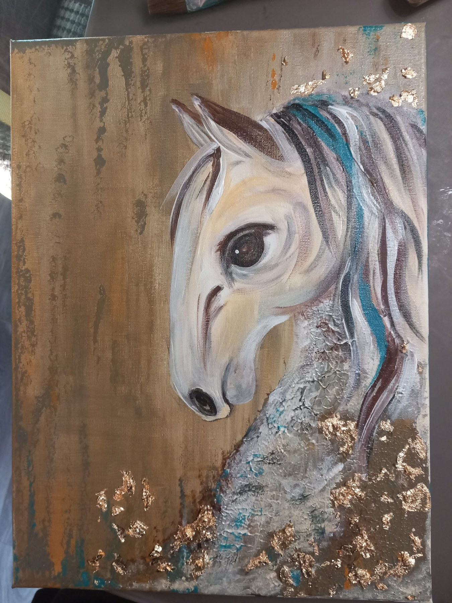
Detalji uskoro
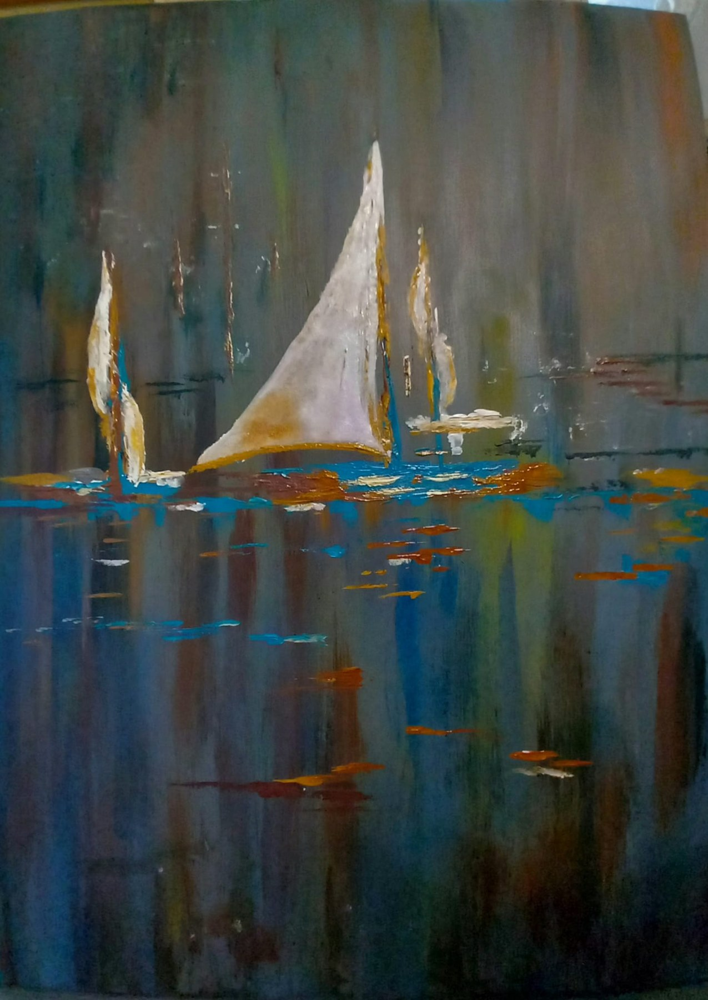
Detalji uskoro
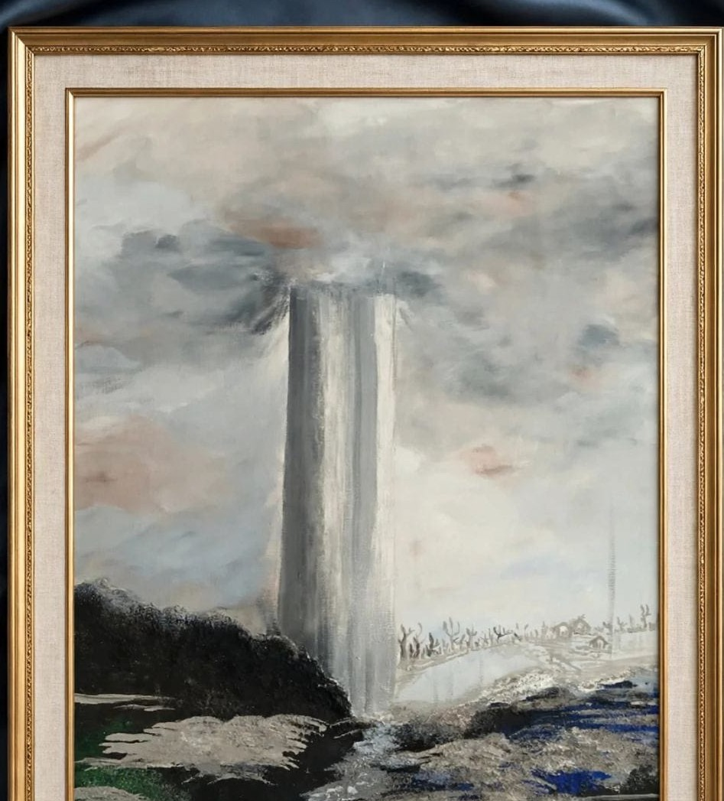
Akril i reljefni akril
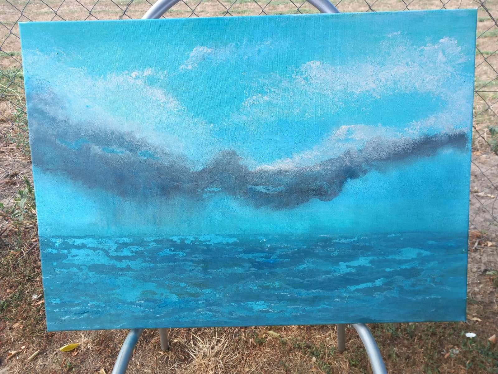
Detalji uskoro
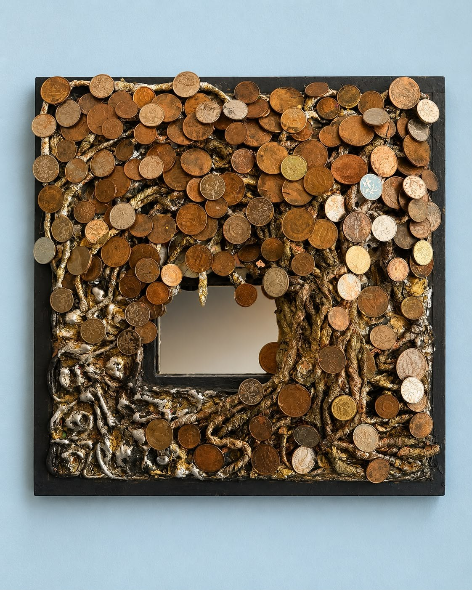
Mixed media · detalji uskoro
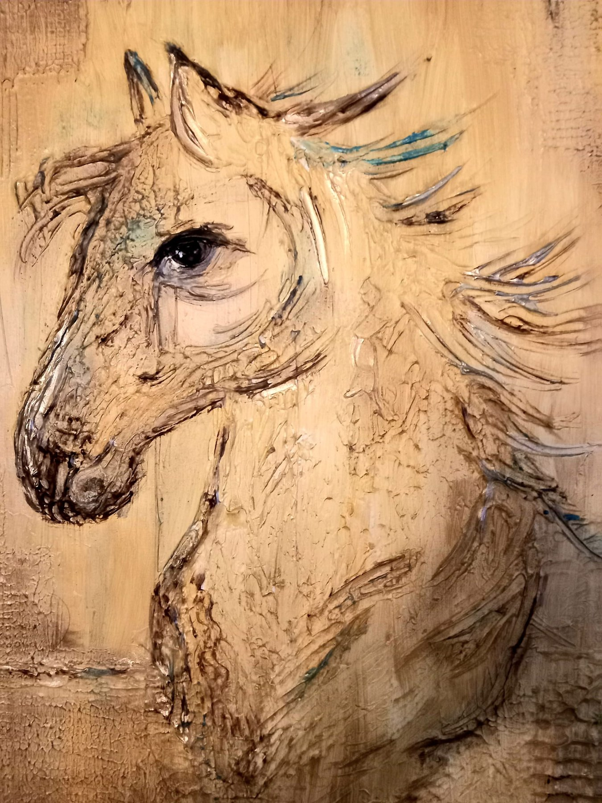
Reljefni rad · detalji uskoro
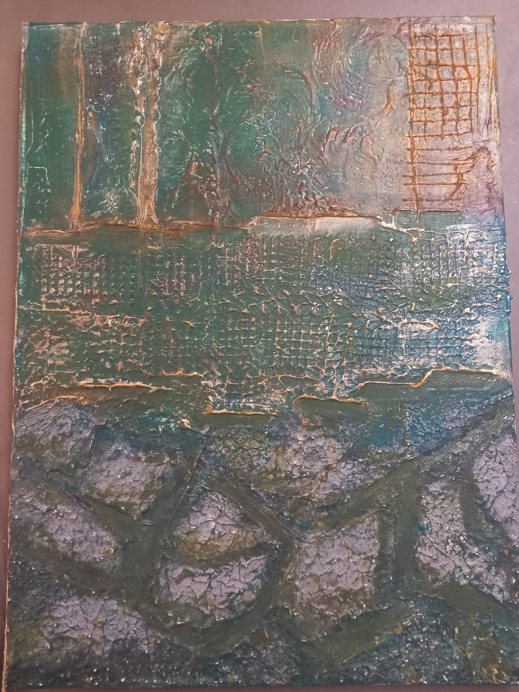
Reljefni rad · detalji uskoro
“Ne slika zato da bi stvarala velik broj slika. Slika zato što ima potrebu nešto ostaviti na platnu.”
 Umjetnička interpretacija portreta prema obiteljskoj fotografiji.
Umjetnička interpretacija portreta prema obiteljskoj fotografiji.
O umjetnici
Rođena 1969. u Osijeku, danas živi i stvara u Dalju, uz Dunav, vrtove, vinovu lozu i poljoprivredne kulture koje se mijenjaju sa svakim godišnjim dobom.
Slikarstvo je s vremenom postalo mnogo više od hobija — prostor slobode, mira i osobnog izražavanja. Njezini radovi nastaju ručno i često istražuju teksturu, reljef, atmosferu i motive prirode.
Njezin svijet nije odvojen od prostora u kojem živi. Dunav, ravnica, plastenici, vrt i životinje dio su svakodnevice iz koje nastaje njezina vizualna priča.
Posebno je vezana uz životinje i svoj dom dijeli s tri psa i pet mačaka. Sva tri psa udomila je nakon teških iskustava iz prijašnjih domova.
Uz slikarstvo, njezin senzibilitet oblikuju glazba i introspektivnija estetika — Nick Cave, Depeche Mode i Morrissey.
Mjesto stvaranja
Umjetnost ovdje ne nastaje u sterilnom studiju. Nastaje u stvarnom prostoru — među zemljom, godišnjim dobima, Dunavom i svakodnevnim životom.


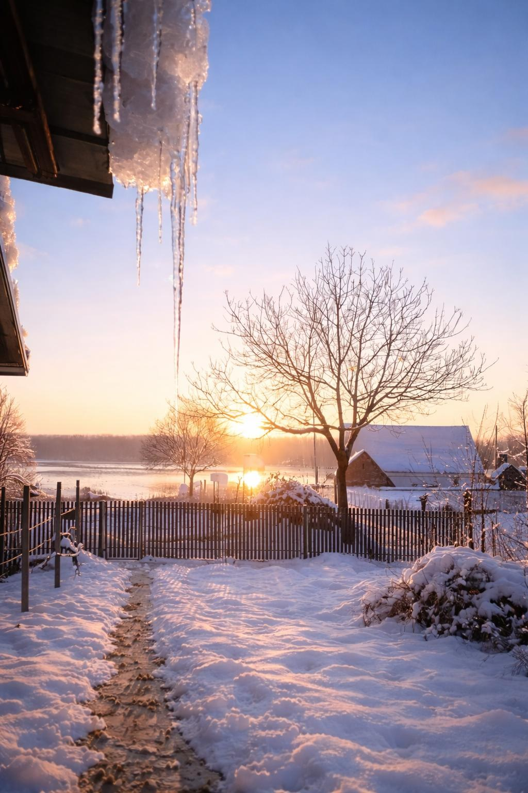


Iza slika
Prije galerije, naziva radova i cijena postoji osobna priča. Obitelj, svakodnevica, glazba, životinje i dom dio su istog svijeta iz kojeg danas nastaju slike.
Fotografije iz privatne obiteljske arhive.
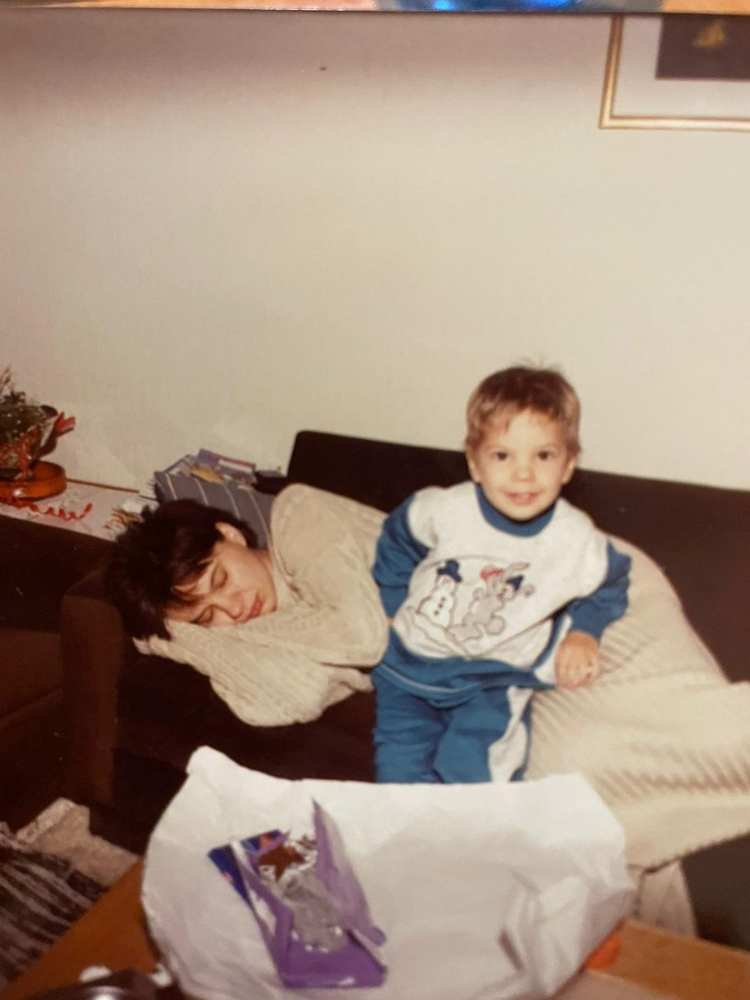
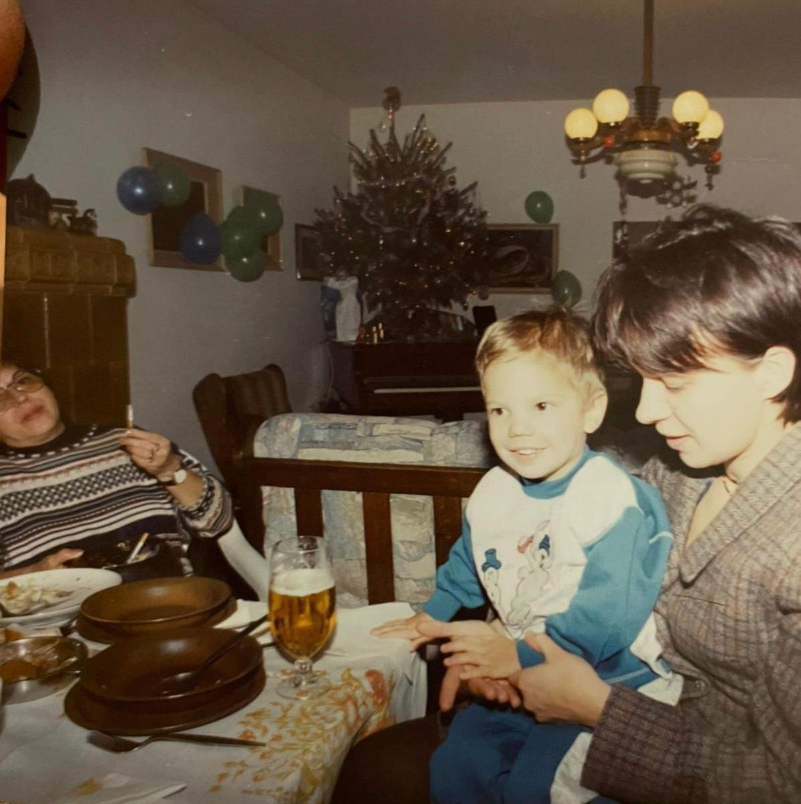
Kontakt i dostupnost
U sljedećoj verziji ovdje će biti navedeni dostupni radovi, dimenzije, cijene i izravan kontakt za upite.
Radni koncept · podaci o prodaji još nisu objavljeni.